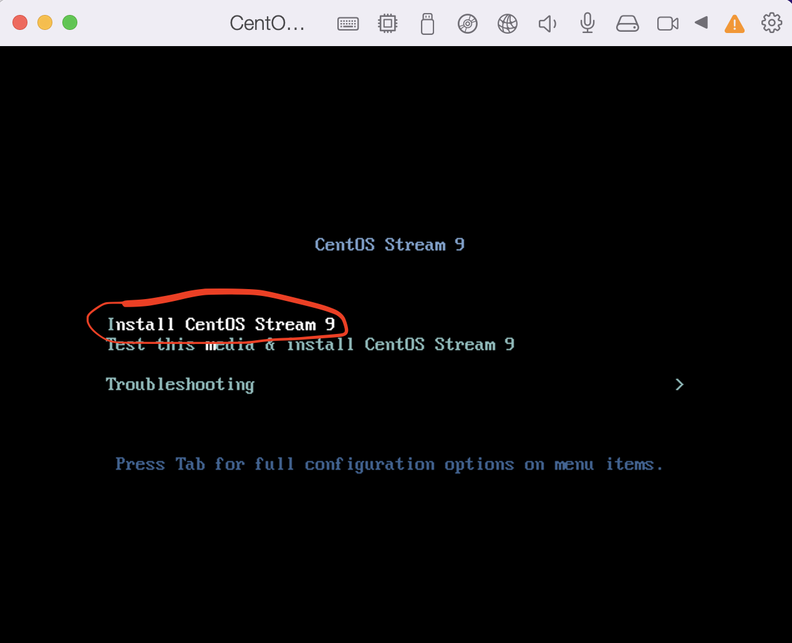
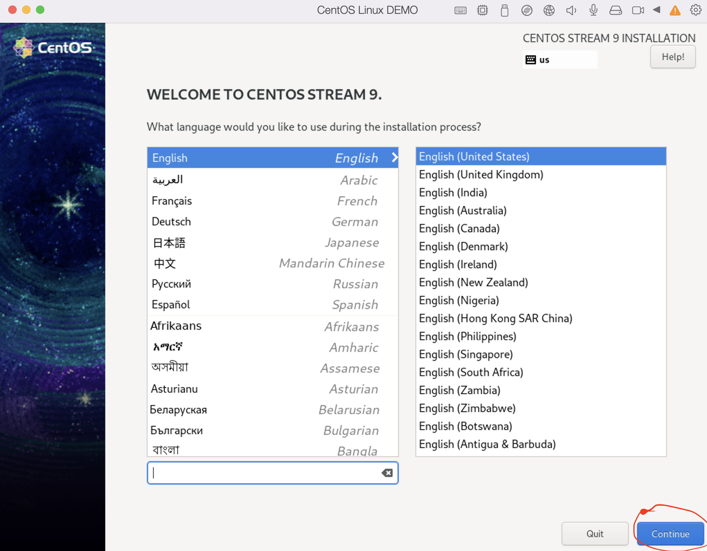
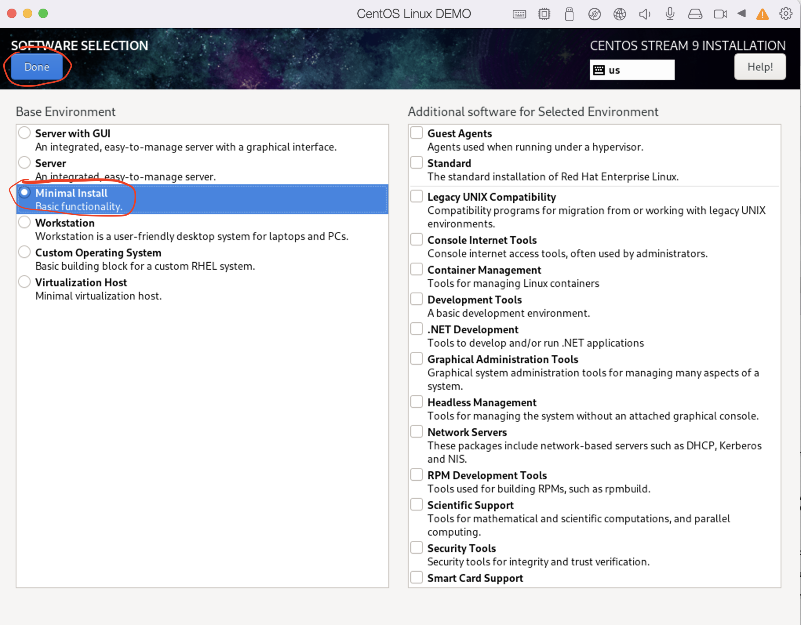
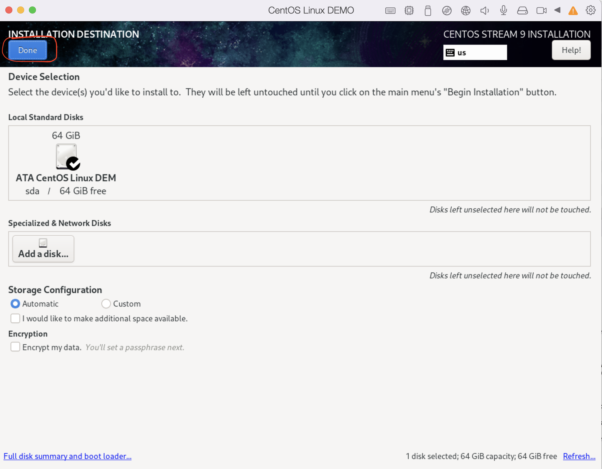
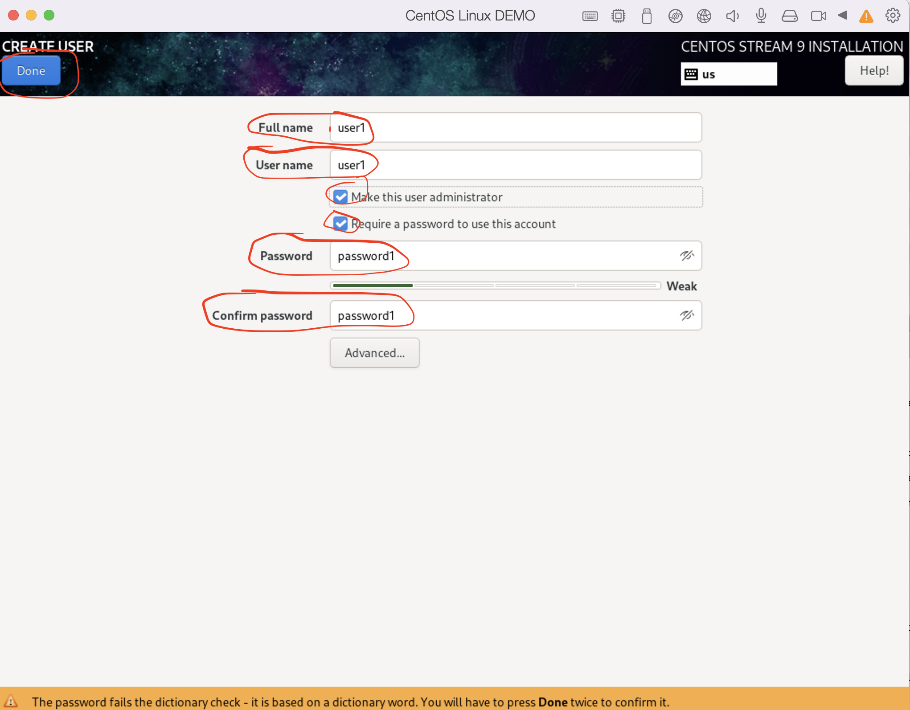
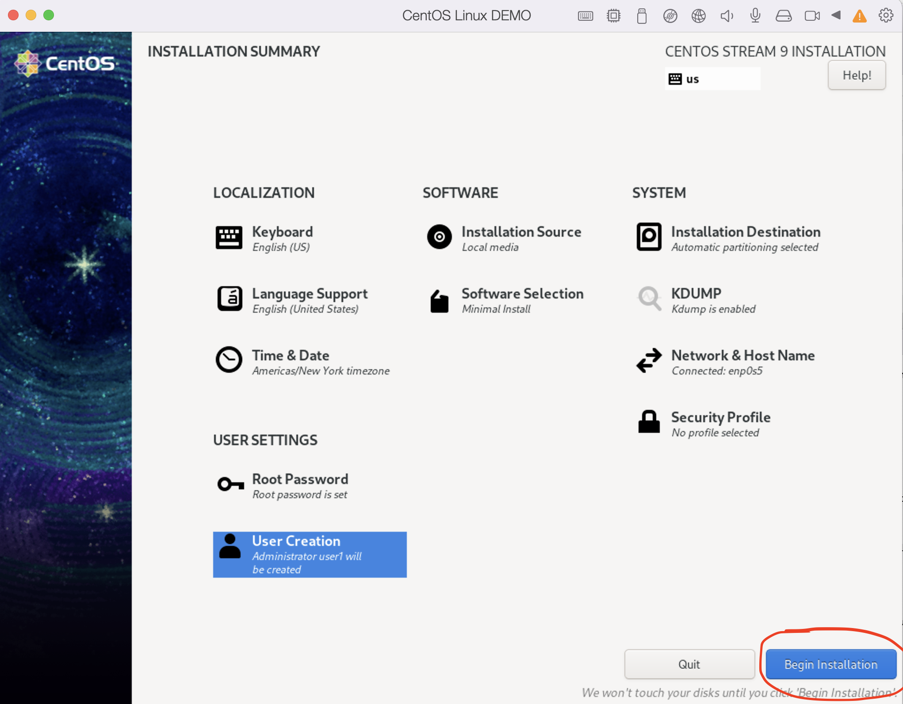
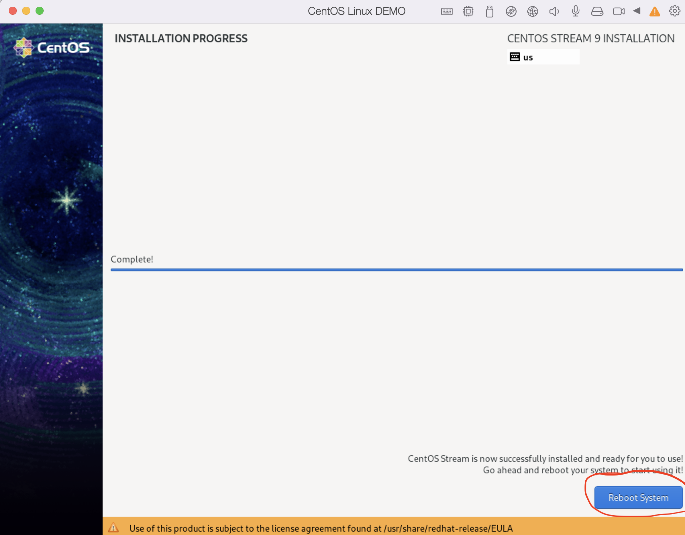
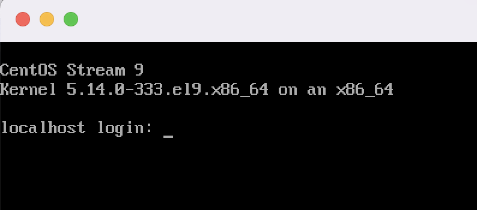
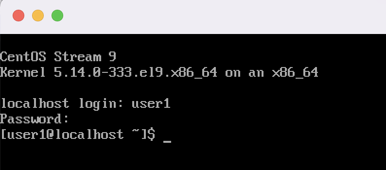
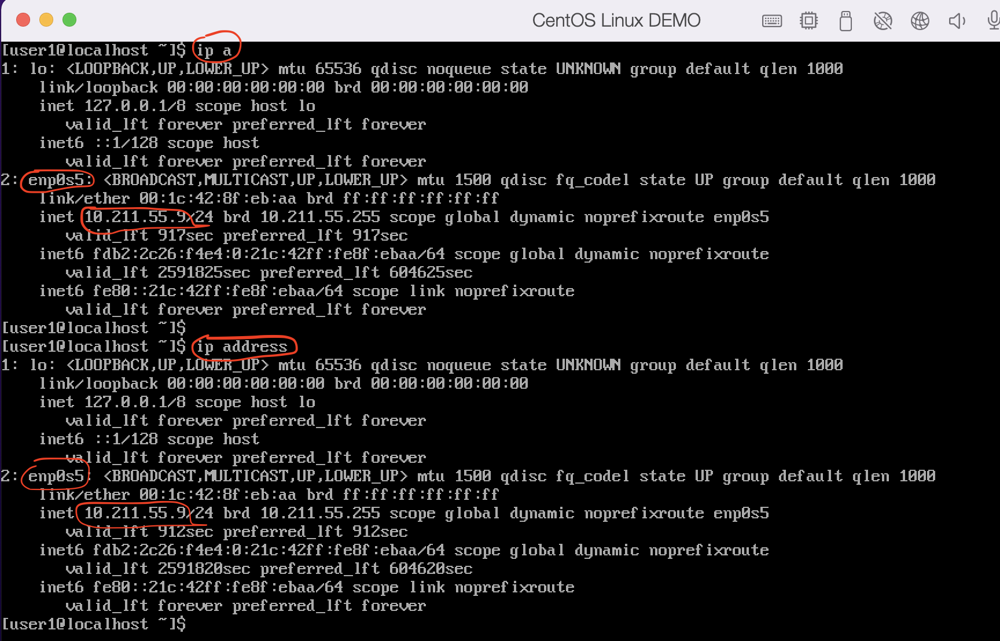

Lab for VM management in Parallels
Step 1. Open a Parallels on Mac
Step 1a. (optional) Cancel update offer
Step 1b. (optional) Close Windows7 window if it appeared and keep only Control Center window
There is one VM is exist on our laptop, lets shut it down
Step 1c.(optional) Shut down existing VM with Windows 7.

Step 2. Create New VM
Click on "plus" icon to run Creation Wizard(Installation Assistant)

Step 3. Choose installation from DVD or image file

Step 4. Installation Assistant tries to find any images (.iso files) on Laptop for your choosing
Step 5. Choose first one with name CentOS-Stream-9-latest-x86_64-dvd1.iso
Note
There many different Linux distributives like: - CentOS (freeware version of RHEL) - RHEL(Red Hat Enterprise Linux) - Debian - Ubuntu - etc
Step 6. Define new user for new Linux VM
It will be user which can login to our VM and do some actions
User Name: user1
Password: password1
Verify Password: password1

Step 7. Specify name of new VM and location of file with VM
Note
Virtual Machine is a file actually and we can move it from one laptop/server ot another
Warning
Each Hypervisor has own format of VM files and almost all of them are incompatible. That means we cannot create VM in Parallels, copy such file to other server and run it in KVM Hypervisor for example.
Dont forget to select Customize settings before installation to adjust CPU and RAM(memory) for new VM

Step 8. Configure VM settings(resources which will be allocated from your laptop/server to the VM)
Step 9. Allocate 1 CPU and and 1024 MB RAM and close such window

Step 10. Start VM initialization
Step 11. Run Linux installation
On the appearing screen choose by arrows buttons first option Install CentOS Stream 9 and press ENTER

Note
Once you click on installation screen your cursor will be locked, to release it press CONTROL+OPTIONS on a keyboard
Step 12. Set Linux settings before installation
During this process we can choose which packages can be installed and configures various parameters for Linux Operation system like Language, user(which we specify above), network settings.
Note
Once installed you can find your VM file here /Users/your user/Parallels.
*.pvm is Parallels file extensing which means that it is VM is created by Parallels Hypervisor.
Step 12.1 Select language English

Step 12.2 Select Software packages for installation
Click on Software Selection and Choose Minimal Install and Done

Step 12.3 Confirm disk for Linux installation
Click on Installation Destination and Done

By default single disk is choosen and you don't need to select something. Just press Done.
Step
Step 12.4 Setup root(it is administrator) user
Click on Root Password option and specify password for root user.
Select Allow root SSH login with password option
Root password: password1
Confirm: password1
Note
Need to Press Done twice to confirm password for root user
Step 12.5 Add user
Click on User Creation and fill out the form
Full name: user1
User name: user1
Make this user administrator: yes
Require apassword to use this account: yes
Password: password1
Confirm password: password1

Note
Need to Press Done twice to confirm password for root user
Step 13. Start Linux installation
Click on Begin instalation

Wait until button Reboot System become active and Press it.

After that installation, VM will reboot and you will see *terminal with login page
Note
Once installed you can find your VM file here /Users/
*.pvm is Parallels file extensing which means that it is VM is created by Parallels Hypervisor.
Step 14. Login as user user1
Use password from steps above


Step 15. Get ip address of your new VM
Linux has command ip for getting information about ip addressess across all interfaces in Operation System.
Some servers/Laptops have more that one interface(for example one for management, second for data transfer to another servers)
Example:
ip a
ip address - to show list of available interfaces and their ip addresses

Step 16. Write down IP address of your VM.